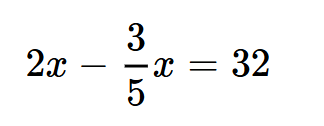
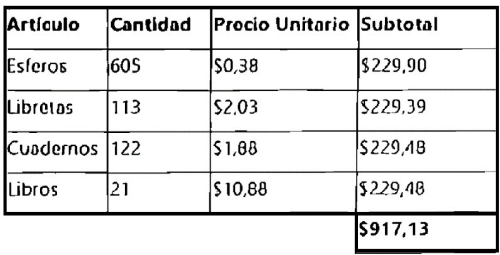
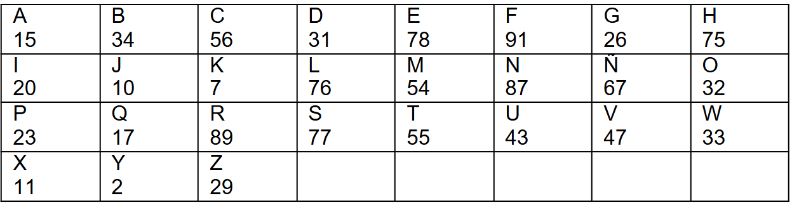
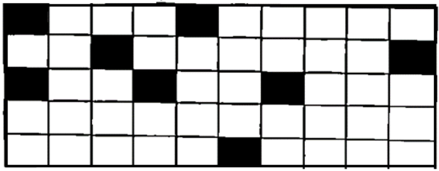
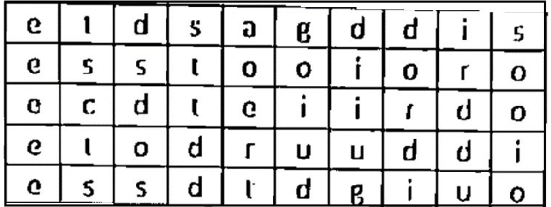

Tiempo restante: 15:00
Pregunta 1 de 20
Roberto es dueño de un autobús y cada semana obtiene un ingreso de $650. En el mes de enero, tuvo gastos fijos por $1,450. Además, tiene que realizar un mantenimiento a su vehículo, lo cual representa un 5% del ingreso mensual. Aplicando conceptos de operaciones matemáticas simples, establece la ganancia neta que obtiene mensualmente.
$1.020Al salir del supermercado, Susana paga una factura por un valor de $78,80 luego de comprar 11,11 libras de carne seleccionada de res y de cerdo a un costo unitario de $7,72 y $ 5,75 respectivamente. Planifique las acciones matemáticas necesarias para determinar la cantidad de libras de carne de cerdo que Susana adquirió.
Susana compro 3,34 libras de carne de cerdo.Juanita se dedica a la confección de calentadores. En el mes de marzo vende el 75% de su mercadería y le queda en stock 45 calentadores conceptos de matemáticas básicas, identifique el número de calentadores que tenía Juanita al inicio del mes para vender.
160Andrea contrata a dos pasantes y desea conocer la edad de uno de ellos. Conoce que Luis tiene 2 años más que Mateo. El doble de Luis menos 3/5 de la edad de Mateo da como resultado 32. Aplicando nociones de matemáticas básicas, seleccione las operaciones que conocer la edad de Mateo.

Pablo adquiere suministros de oficina en la librería de Lorena, quien remite su factura con los siguientes datos:
Miguel está encargado de colocar césped en un parque de forma triangular cuya base tiene 36, 56 cm. y la altura del triángulo es de 18,23 cm. Aplicando conceptos de geometría básica, calcule la superficie que debe ser cubierta por el césped.
La superficie a cubrirse por el césped es de 335,24 m2Andrés es un destacado abogado en libre ejercicio. Ha trabajado durante más de 2 años manejando casos relacionados con la circulación. En cada caso presentado, demuestra un notable dominio al expresar sus ideas, lo que le ha ganado el reconocimiento de los agentes de tránsito por sus intervenciones claras y efectivas. Aplicando los conceptos relacionados a la palabra marcada en negrita, seleccione el término excluido:
HabladorJefferson un flamante abogado, es contratado por Carolina para que la defienda sobre una acusación de fraude que ella no cometió. Durante la audiencia, se presentan todas las pruebas de descargo que reflejan la inocencia de Carolina, por lo tanto, el Juez designado para el proceso, revisa de manera cautelosa dichas evidencias manteniendo una actitud taxativa, pues existe una clara afectación contra la honra de Carolina. Identifique el sinónimo de la palabra marcada en negrita: “taxativa”
CategóricaAndrés lleva el caso de una denuncia por cobro de letra de cambio. Durante la audiencia, el abogado defensor se da cuenta que tiene pruebas falsas que presentó el acusado, por lo tanto, el juez decide arbitrar la situación para aclarar los documentos entregados como evidencia Identifique el sinónimo de la palabra marcada en negrita: "arbitrar".
ArgumentarMarcelo es un maestro en el arte de la carpintería que fabrica diferentes piezas. El recibe un contrato en el cual solicitan decoración con piezas especiales y colores llamativos. Marcelo decide contratar a una persona sin experiencia para complementar sus labores. Para ello, Marcelo utiliza todas las técnicas relacionadas al área. Aplique los conceptos relacionados en la siguiente analogía:
"maestro es a carpintero" como "aprendiz es a _______
En la ciudad de Riobamba, se ha presentado una nueva organización política que busca defender los derechos de las personas por ello, los integrantes han decidido elegir un adalid con fuertes conocimientos y experiencia en el área con la finalidad o siguientes elecciones. Aplicando los conceptos relacionados a la palabra marcada en negrita, seleccione el término excluido:
PaladínJuan, estudiante con problemas en la lectoescritura asiste a terapia para mejorar su condición, para lo cual, el psicólogo educativo, en una actividad utiliza una cuadrícula con las letras b, d, p y q, acompañadas de símbolos cada una. Descubra cuántas letras (q* y p*) existen:

Amanda es docente en una Unidad Educativa, ella nota que una de sus estudiantes tiene problemas de concentración, para ayudar a mejorar su condición ella le asigna una actividad y le indica que debe, identificar el inverso de la siguiente palabra: otorrinolaringólogo.
Seleccione una:
Salome se encuentra realizando un inventario de todos los productos que han caducado en un centro comercial, en este caso enlatados que corresponden a un mismo código de producción, por lo que debe, inferir cuántos productos corresponden al mismo código
00023269259969
Daniel es estudiante de bachillerato en una Unidad Educativa, su docente le asigna una tarea que consiste en; descubrir el número que encuentra en la siguiente palabra "ESTUDIO" y determinar cuál es la cantidad sumada de los números asignados a cada letra
Soledad se encuentra rindiendo una evaluación de ingreso a la Policía Nacional, en esta le entregan dos cuadrículas, en las cuales, la palabra que se forma con las letras de la cuadricula 2 al relacionarlas con el cuadro que contiene un patrón en la cuadrícula 1.
| CUADRICULA 1 | CUADRICULA 2 |
|---|---|
|  |  |
El arquitecto Muller está diseñando una torre. Cada piso de la torre tiene una altura específica. La altura del primer piso es de 4 metros. A partir del segundo piso, cada piso tiene una altura que es 1,5 veces la altura del piso anterior. La secuencia de alturas de los primeros pisos se muestra a continuación:
4 metros, 6 metros.
Calcular la altura del quinto y sexto piso.
En un programa de televisión nacional el animador presenta a un concursante un desafío lógico, y en una pantalla se muestra la siguiente sucesión de palabras:
maniatado, napolitano, Orozco, patriótico, Quito,
Seleccionar la sexta palabra que completa la sucesión, para que el concursante gane un premio de 200 dólares.
Ana se encuentra en clases en su unidad educativa, su docente le asigna una tarea, para lo cual, entrega una lista de palabras qué palabra corresponde a la secuencia. Identifique la respuesta correcta.
camaleón, docente, espuma,………. guía
Juan Luis realiza una revisión de los exámenes médicos de María tomados en los últimos 4 meses, encontrado la siguiente secuencia de valores de química sanguínea:
Mes 1: 275,25 Mes 2: 280,25 Mes 3: 290, 25 Mes 4: 305,25